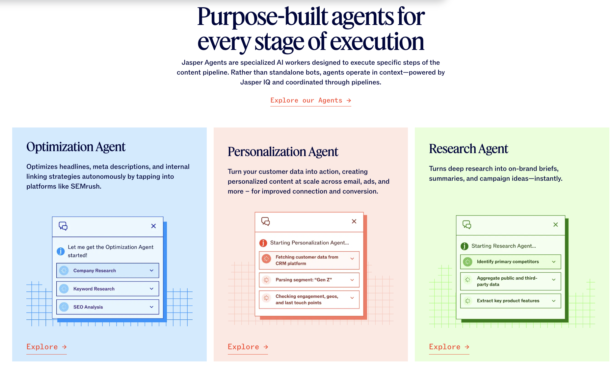
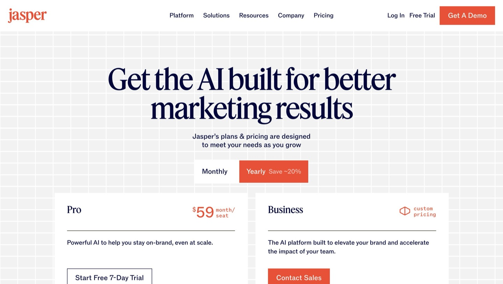

This review is based on documented features, verified pricing, and community sentiment — not hands-on testing. See how we research →
Jasper AI is the most brand-consistent AI writing platform in the category. That's not a vague claim — it's structural. Jasper IQ, the platform's brand governance layer, embeds your brand guidelines, tone of voice, style rules, and institutional knowledge into every piece of AI output across your entire team. Competitors can mimic tone with a system prompt. Jasper enforces it systematically.
In 2026, Jasper has evolved further into what it calls "the agent workspace for modern marketing teams" — 100+ specialized agents, Content Pipelines for multi-step campaign workflows, and a Canvas editor that functions like Google Docs with AI layered in. Whether that's worth $49-69/month depends entirely on how much brand consistency and team-scale content production matter to your organization.
This review is research-based: it covers Jasper's documented capabilities, verified May 2026 pricing, and community feedback from marketing teams. Jasper reports more than 100,000 active users, and Boeing, L'Oréal, and Wayfair are among the enterprise customers it cites — the kind of organizations whose brand-governance needs the product is built around.

Jasper IQ is the core differentiator and the reason teams pick Jasper over ChatGPT or simpler AI writers. It stores your brand guidelines, tone rules, visual guidelines, and product information in one place, then enforces them across every team member's output. A solo writer can paste brand notes into a prompt; that doesn't scale to ten people producing copy daily. Jasper IQ makes consistency a system setting rather than a habit each writer has to remember.
Canvas is a Google Docs-like editor with AI assistance built in. A sidebar gives you access to your documents, templates, and brand settings without leaving the page. The practical advantage shows up in the structured template inputs — you specify audience, tone, and key points before generating, and that constraint produces more consistent outputs than open-ended prompting. It's a small workflow difference that compounds across a content team.
Jasper ships more than 100 specialized agents covering essentially every marketing use case: blog posts, product descriptions, ad copy, email sequences, social captions, and landing pages. Each one is structured to prompt for the relevant inputs before generating rather than starting from a blank box. For teams that produce the same content types repeatedly, this removes the prompt-engineering overhead that general chatbots leave to the user.
Content Pipelines handle multi-step campaign workflows. Around a single product launch, you can build a campaign brief, a blog outline, promotional emails, social captions, and ad variations in one connected workflow — each step aware of the others. This is the feature that distinguishes Jasper from tools that generate isolated pieces; it treats a campaign as a connected set of assets rather than a pile of separate documents.
Jasper Chat is conversational AI with brand context. Unlike a stock ChatGPT session, Jasper Chat has access to your brand voice settings and documents, so its responses already reflect your tone. The notable limitation: it cannot browse URLs for real-time information. If live web research is central to your workflow, that gap matters — and it's where Writesonic and research-first tools have an edge.
Beyond the template apps, Jasper Agents are specialized AI workers tied to specific stages of the content pipeline — optimization, personalization, and research (see the screenshot above). Rather than one general assistant, you delegate distinct jobs to purpose-built agents, which fits the way larger teams already divide content work.
Jasper integrates with Surfer SEO for on-page optimization, scoring drafts against target keywords as you write. Worth being precise about what this is and isn't: it's optimization against a brief, not native keyword research. You'll still need a separate tool to find the keywords in the first place. Teams that already run Surfer will find the integration genuinely useful; others are paying for a hook into a product they may not own.
On the Business plan, Jasper adds shared brand assets, document collaboration, and usage analytics so managers can see how the seat allocation is actually being used. These are the features that justify the platform for content operations rather than individuals — the value is in coordinating a team, not in any single writer's output.

Jasper offers three plans, verified May 2026. Creator is $49/month, or $39/month on annual billing — one seat, unlimited words, one brand voice, all templates, the Canvas editor, and Jasper Chat. Pro runs $69/month ($59/month annual) and covers up to 5 seats with three brand voices, collaboration features, and Jasper IQ — a notable shift from the previous single-seat structure. Business is custom-priced and adds unlimited seats, advanced Jasper IQ, API access, SSO, a dedicated CSM, and usage analytics.
There's no free plan, but both Creator and Pro include a 7-day free trial with no credit card required. The old Starter plan is no longer available to new users, and Boss Mode has been discontinued entirely.
Creator plan increased from $39/mo to $49/mo on monthly billing; annual rate holds at $39/mo. Pro increased from $59/mo to $69/mo monthly, with annual still at $59/mo — but now covers up to 5 seats instead of 1. Boss Mode plan discontinued. Starter plan no longer available to new users. 7-day free trial added on both Creator and Pro.
The honest framing for evaluating Jasper in 2026: do you need what only Jasper IQ provides? Jasper IQ is a governed brand layer — it doesn't just remember your tone, it enforces it across every team member's output, every template, every campaign. For marketing teams with defined brand guidelines that need 10+ people producing consistent copy, the value is clear. For solo creators or small teams whose brand guidelines fit in a system prompt, ChatGPT or Claude can replicate the output quality at $20/month.
The per-seat pricing is where Jasper's value equation gets complicated. Creator at $39/month (one seat) is competitive with Writesonic Lite. Pro at $59/month for up to 5 seats works out to under $12/seat — defensible for active daily users. The model breaks down for occasional users and small teams, where the per-seat cost compounds without proportional usage. Put plainly: Jasper rewards heavy, coordinated use and penalizes light, scattered use.
| Jasper | Writesonic | Copy.ai | |
|---|---|---|---|
| Core focus 2026 | Brand-consistent marketing content | SEO + content platform | GTM automation |
| Brand governance | ✓ Jasper IQ (best in class) | ✗ | ✗ |
| Agents/templates | 100+ specialized agents | 80+ templates | 90+ templates |
| Content Pipelines | ✓ Campaign workflows | Limited | ✓ Workflows (GTM focus) |
| URL browsing | ✗ | ✓ Live research | ✓ |
| SEO integration | Surfer SEO add-on | ✓ Ahrefs native | ✗ |
| Free tier | ✗ (7-day trial) | ✓ Permanent free | ✓ 2,000 words |
| Starting price | $39/month (annual) | $20/month | Contact sales |
| Per-seat model | Yes | No | No |
| Best for | Marketing teams with brand guidelines | Solo bloggers, SEO | Sales/GTM teams |
Read the table by what each tool refuses to compromise on. Writesonic leads on live research and a permanent free tier, so it wins for solo bloggers and SEO work where finding and verifying information matters as much as writing it. Copy.ai has pivoted toward go-to-market automation, which makes it a sales-team tool more than a content-team one. Jasper is the only platform here that treats brand governance as a first-class feature rather than an afterthought — and it's also the only one charging per seat. That single design choice explains most of the price gap, and it's the line that should decide your shortlist: if enforced consistency across a team is the problem you're solving, Jasper is built for it; if it isn't, you're paying for infrastructure you won't use.
No credit card required. Cancel anytime.
Start Free Trial →Jasper is the strongest option in 2026 for one specific job: keeping a marketing team's content on-brand at scale. Jasper IQ is the reason — a governed brand layer that enforces tone across every writer, template, and campaign rather than hoping each person remembers the guidelines. For a team of three or more producing steady volume, that's worth paying for, and the 5-seat Pro plan at under $12 per seat makes the math work.
The case weakens fast outside that profile. Per-seat pricing punishes light and scattered use, Jasper Chat can't browse the live web, and the pause policy is a real operational annoyance. Solo creators can match the raw output quality with ChatGPT or Writesonic at half the cost. That gap between team value and individual value is exactly why this review lands at 8.2 rather than higher — Jasper is very good at what it's built for, and overpriced for everything else.